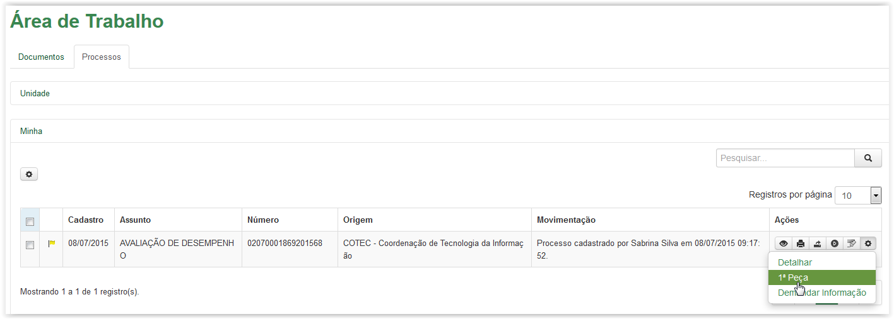
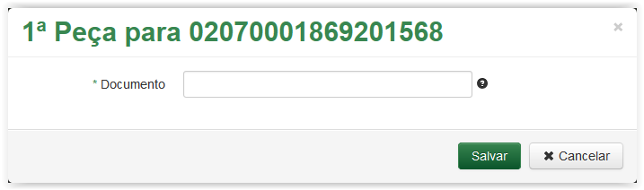
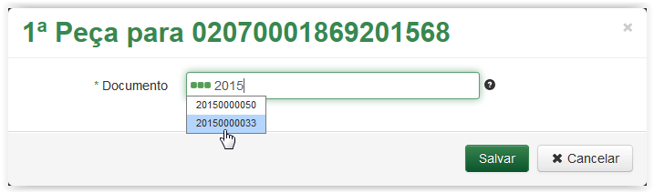
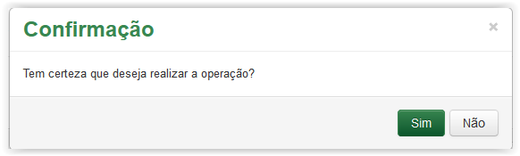
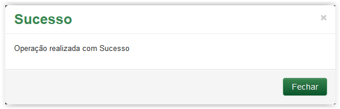
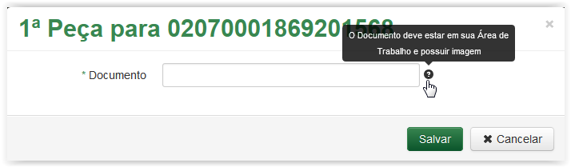
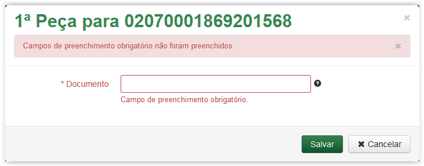

Inserir 1ª Peça ao Processo
Para inserir a primeira peça ao processo, clique no ícone  correspondente, disponível na coluna Ações da Área de Trabalho:
correspondente, disponível na coluna Ações da Área de Trabalho:

Aba Processos - Ícone Opções
Após clicar no ícone o sistema apresenta uma lista com algumas opções. Selecione a opção 1ª Peça:

Selecionando a opção 1ª Peça
A tela 1ª Peça é exibida apresentando em seu título o número do processo selecionado. Observe que o campo Documento é obrigatório (Veja Nota 1):

Tela 1ª Peça
 Preenchendo a tela 1ª Peça!!
Preenchendo a tela 1ª Peça!!

Selecionando um número de documento na lista para preencher o campo Documento
 . O sistema apresentará uma mensagem de confirmação. Caso contrário, se desistir de inserir a 1ª peça, clique no botão
. O sistema apresentará uma mensagem de confirmação. Caso contrário, se desistir de inserir a 1ª peça, clique no botão  para retornar para a Área de Trabalho:
para retornar para a Área de Trabalho: 
Mensagem de confirmação
, clique no botão  , da mensagem de confirmação, para retornar para a tela 1ª Peça. Ou então, clique no botão
, da mensagem de confirmação, para retornar para a tela 1ª Peça. Ou então, clique no botão  para confirmar e o sistema apresenta a mensagem de sucesso abaixo:
para confirmar e o sistema apresenta a mensagem de sucesso abaixo:
Mensagem de sucesso
IMPORTANTE!!
 Lembrete 1:
Lembrete 1:
O documento para ser usado como 1ª peça do processo deve constar na Área de Trabalho e possuir imagem!
Esse lembrete é apresentado na tela 1ª Peça, ao posicionar o mouse em cima do ícone :

Exibindo texto informativo após posicionar o mouse no ícone.
 Nota 1:
Nota 1:
Os campos obrigatórios são indicados pelo sinal de asterisco (*) na cor verde ao lado do nome. Quando algum ou nenhum campo obrigatório for preenchido, o sistema apresenta uma mensagem de erro: "Campos de preenchimento obrigatório não foram preenchidos.".

Comportamento da tela 1ª Peça ao tentar salvar sem preencher o campo obrigatório.
Created with the Personal Edition of HelpNDoc: Easy to use tool to create HTML Help files and Help web sites